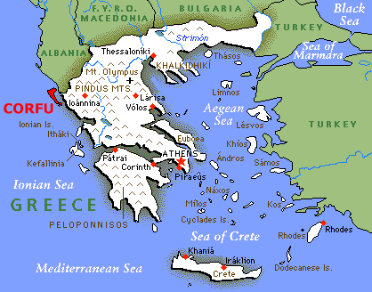

PRELUDE TO AN ODYSSEY

|
But the Consul's brow was sad And the Consul's speech was low And darkly looked he at the wall And darkly at the foe. ("Horatius", T. B. Macaulay, 1800-1859) |

|
But the Consul's brow was sad And the Consul's speech was low And darkly looked he at the wall And darkly at the foe. ("Horatius", T. B. Macaulay, 1800-1859) |
Homer relates in the VIth Book of the Odyssey how once upon a time Odysseus, King of Ithaca, made a conspicuous - albeit inauspicious - landing on the shores of Phacacia (later named Corfu) and was subsequently acclaimed by the local inhabitants as a worthy hero until he was eventually given the order of the boot.
Some three thousand years later Lafayette Ron Hubbard, King of Scientology, stepped ashore on Corfu in somewhat more regal style and was also accorded a hero's welcome until he too was finally kicked out of the island.
Odysseus, it will be recalled, was sent packing because of fears of extramarital relations with the Princess Nausicaa, whilst Hubbard (who claims to have sailed in those seas in the Carthaginian fleet in the 1st or 2nd century B.C.) was expelled for far more sinister reasons; and here of course any similarity in the adventures of the two seafarers ends -except that both improbable dramas are truly classic in their own way. The remarkable story which follows is mainly a condensation of the day-to-day dramatic events as recorded in my diary whilst British Vice-Consul, Corfu, and might justifiably be dismissed as pure fiction but for the fascinating photographs and revealing photostats of official documents and other papers reproduced on the ensuing pages which 'fortuitously' came my way, many of which are (literally and metaphorically) quite priceless.
Packed with tension, horror, suspense and satire, this amazing story tells for the first time how Hubbard after wooing the Colonels of the Greek Dictatorship came within a hair's breadth of taking over partial control of the island and converting it into the world centre for the cult of scientology', and how it came about that on the threshold of triumph Hubbard and his flock were suddenly declared "personae non gratae" and given 24 hours notice to sail with their fleet from these shores.


Last updated 11 January 1997
by Chris Owen (co@nvg.unit.no)